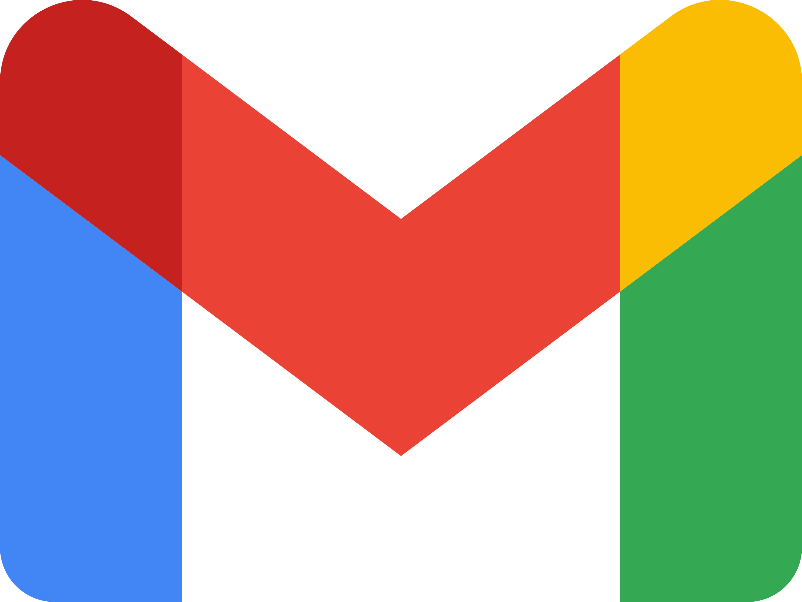

Heurtebise Johan
Formation
BUT Réseaux et Télécommunications, IUT de Blois
Diplomes
- Diplome National du Brevet, Mention Bien, Collège Pierre Belon
- Baccalauréat Général Mathématiques / NSI, Mention Assez Bien, Lycée d'Estournelle de Constant
Expériences
- Stage d'infographiste dans une entreprise
À propos de moi
Bonjour,Je m'appelle Johan Heurtebise, étudiant en première année de BUT Réseaux et Télécommunications à l'Université de Tours, sur le campus de Blois. Depuis toujours, l'informatique et les nouvelles technologies me passionnent. Cette vocation m'a amené à suivre un Bac Général, où j'ai choisi les spécialités Mathématiques et NSI, qui m'ont permis de développer de solides compétences en logique, en résolution de problèmes et en programmation.
Dans mon parcours en BUT R&T, j'explore des domaines variés, allant des réseaux à la cybersécurité en passant par l'administration de systèmes. Grâce aux projets pratiques et aux cours, je me forme aux fondamentaux de la gestion de réseaux, de la configuration d'équipements et des bases en sécurité informatique.
Apprécié pour ma rigueur, ma curiosité et mon esprit d’équipe, je m’engage pleinement dans mes études et m’efforce d’approfondir constamment mes connaissances. Mon objectif est de devenir un spécialiste en infrastructure et cybersécurité, prêt à relever les défis technologiques de demain.
Réseaux Sociaux
-
 LinkedIn
LinkedIn
-
 StillContact
StillContact
-

johanheurtebise@frstud.fr
-
06 71 29 96 10